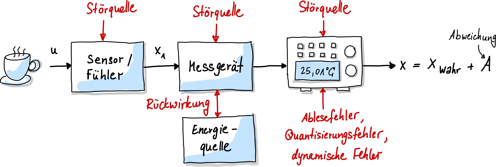
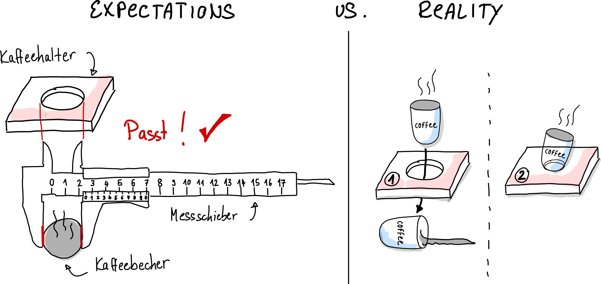
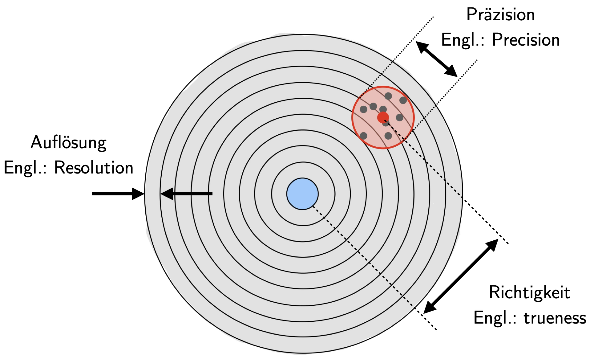
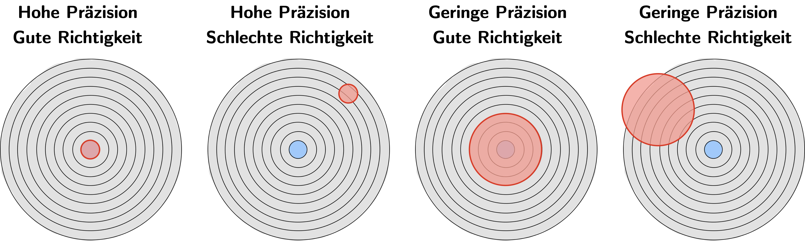
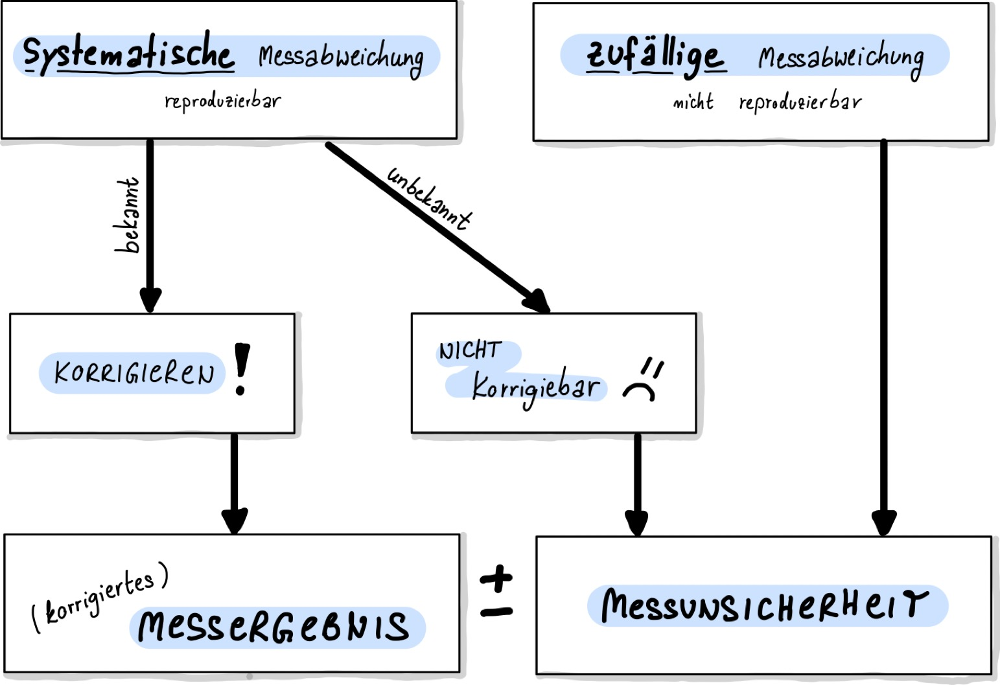
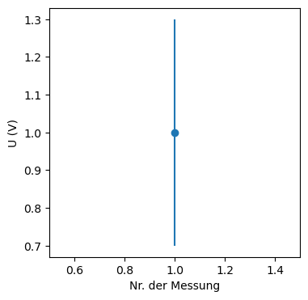
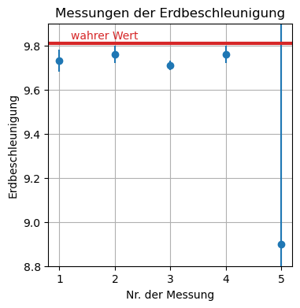

Einführung
Jede Messung, egal ob von Temperatur, Strecke oder Geschwindigkeit, ist immer mit einer Messabweichung verbunden. Der Messwerte, ohne Angabe einer Messabweichung, ist daher wertlos. Die Messabweichung ist ein Maß für die Qualität der Messung: Desto kleiner die Messabweichung, desto genauer oder präziser ist die Messung.
Messabweichung vs. Messfehler vs. Messunsicherheit
Früher hat man statt Abweichung noch den Begriff Messfehler verwendet. Man dachte, dass man mit genügend Aufwand, Sorgfalt und bestmöglicher Technologie den Fehler vollständig eliminieren könne. Spätestens seit der Theorie der Quantenphysik ist uns allerdings bekannt, dass zufällige Einflüsse auf die beobachteten Messgrößen unvermeidlich sind und auch nicht vorhergesagt werden können. Statt eines einzig wahren Wertes, \(x_w\), werden in der Quantenphysik Messgrößen durch deren Erwartungswerte vorhergesagt. Diesen Messgrößen liegt eine Wahrscheinlichkeitsdichte zu Grunde, dessen Varianz (bzw. Standardabweichung) nicht verschwindet! Somit werden für ein und dieselbe physikalische Messgröße verschiedene Ergebnisse gemessen, obwohl nahezu identische Bedingungen herrschen. Das Eintreten eines bestimmten Messergebnisses ist an eine bestimmte Wahrscheinlichkeit gekoppelt, mit der dieses Ergebnis eintritt. In diesem Fall spricht man von einer Messunsicherheit, die wir im nächsten Kapitel durchnehmen. Die Messunsicherheit ist eine spezielle Art der Messabweichung, welche mittels statitischen Methoden bestimmt wird.
Ursachen
Warum erhält man überhaupt verschiedene Messwerte mit demselben, hochpräzisen Messinstrument? Das liegt daran, dass auf die Messung verschiedene Einflussfaktoren einwirken. z.B. Umgebungstemperatur, wie ich den Messschieber bediene und die Digitalanzeige haben Einfluss auf das Messergebnis, wie in Abb. 13 dargestellt.
{kind=link}

Abb. 13 Vereinfachtes Modell eines Messsystems mit Störeinflüssen.#
Folgende Störungen können während der Messung auftreten:
Innere Störgrößen: Hierbei handelt es sich um Störgrößen im Messgerät selbst. Beispiele dafür sind Alterungseffekte an für die Messung wichtigen Bauteilen. Bei Drehspulinstrumenten oder Waagen ist eine Feder eingebaut, deren Eigenschaften sich im Laufe der Lebensdauer verändert, was sich in einer fehlerhaften Anzeige bemerkbar macht.
Äußere Störgrößen: Messungen werden meist durch mehrere unerwünschte Einflüsse gestört. Eine Widerstandsbrückenschaltung ist beispielsweise temperaturabhängig. Hierbei gibt es sowohl systematische Abweichungen, d.h. man kann den Einfluss isolieren und deterministisch beschreiben und die Messung korrigieren. Eine andere Art von äußeren Störgrößen sind zufällige Einstreuungen, die man nicht kompensieren kann. Zu ihrer Unterdrückung kommen u. a. einfache Mittelwertfilter zum Einsatz.
Beobachtungsfehler: Wenn du eine Messung durchführst, kannst auch du, der Beobachter, zu einer Fehlerquelle werden, wenn z.B. die Anzeige falsch abgelesen wird (Müdigkeit, Sehschärfe, Übung).
Dynamische Fehler: Jedes Messsystem braucht eine bestimmte Zeit um sich einzupendeln. Daher sollte man immer einen Moment warten, bis man das Messsignal abliest. Die Abweichung entspricht hierbei der Größe des Toleranzbereichs. Optimalerweise wird das gemessene Signal der eigentlichen Messgröße verzögerungsfrei folgen. Sollte dies nicht der Fall sein, wird dies als dynamischer Fehler bezeichnet.
Rückwirkung Jedes Messgerät braucht für den Messprozess Energie oder Leistung, die dem Prozess entzogen wird. Der Wert der Messgröße mit angeschlossener Messeinrichtung unterscheidet sich vom Wert, der ohne Messeinrichtung erreicht worden wäre. Auch bei externen Spannungsversorgungen entsteht eine Rückwirkung und Kopplung aufgrund von Wärme, die äußere Störgrößen antreibt.
Quantisierungsfehler: Diese Fehler entstehen bei der Digitalisierung. Es existiert nur eine endliche Anzahl von Möglichkeiten einen analogen Messwerte mittels Bits darzustellen.
Um Messabweichungen und Störungen zu reduzieren, sollten immer die vom Hersteller spezifizierten Normalbedingungen (Messbereich, Messgenauigkeit, Betriebsbedingung, Einbauvorschrift, Energieversorgung, Abmessungen) eingehalten werden.
{kind=link}

Abb. 14 Kaffeehalter und Kaffeebecher zeigen den gleichen Wert auf dem Messschieber an. Warum passt es trotzdem nicht?#
In Abb. 14 ist ein Beispiel aus der Produktion gegeben. Für einen Kaffeebecher mit Durchmesser \(d = 55\,\mathrm{mm}\) soll eine einfach Halterung produziert werden. Der Durchmesser \(x\) des Kaffeebechers wird mit dem Messschieber bestimmt und an zwei Firmen weitergegeben. Im ersten Produkt ist der Halter zu groß, der Becher rutscht durch. Im zweiten Fall wird das Loch noch einmal mit dem Messschieber überprüft. Dieser zeigt den richtigen Wert von \(55\,\mathrm{mm}\) an, dennoch passt der Becher nicht. Woran liegt das?
Was in diesem Beispiel fehlt ist die Angabe der Toleranz. Die Toleranz erhält man durch die Bestimmung der Messabweichung und muss dem Kaffeebecherhalter-Hersteller weitergegeben werden. Entweder in Form der absoluten Messabweichung \(u(d)\), die die gleiche Einheit wie der Messwert hat, zum Beispiel:
oder in Form der relativen Messunsicherheit:
Doch wie wird diese Messabweichung ermittelt?
Sie können Wiederholungsmessungen durchführen und den Durchmesser des Kaffeebechers im Rahmen einer Messreihe oder in der Statistik auch Stichprobe genannt beispielsweise 100 Mal messen. Aus der Abweichung der Einzelmessungen zum Mittelwert kann ein Genauigkeitmaß ermittelt werden. Werden diese Einzelmessungen direkt hintereinander in einem Raum von 35 Grad Celsius durchgeführt, sind alle Messungen in gleichem Maße durch die vergleichsweise zu hohe Raumtemperatur systematisch abgelenkt. Nimmt man einen positiven Temperaturausdehnungskoeffizienten des Kaffeebechers an, so bestimmen Sie einen Durchmesserwert, der systematisch zu groß ist, wenn der Halter in einer Raumtemperatur von 20 Grad Celsius angefertigt wird. Die systematischen Einflussgrößen sind in den Abweichungen der Einzelmessungen zu ihrem Mittelwert (die sogenannte Standardabweichung) nicht enthalten. Die Standardabweichungen sind zu optimistisch.
Anhand Abb. 15 wird dieser Sachverhalt an einer Zielscheibe dargestellt. Sie kennen das Phänomen aus Ihren Schießübungen bei der Bundeswehr: Obwohl Sie versuchen das Zentrum der Zielscheibe mehrere Male zu treffen, befinden sich Ihre Einschüsse systematisch davon entfernt, was beispielsweise durch eine Dejustierung der Zielvorrichtung hervorgerufen wird. Es entsteht ein lokal eingegrenzter Bereich von Einschusslöchern, der vom Zentrum der Zielscheibe deutlich verschoben ist.
Auflösung, Präzision, Richtigkeit und Genauigkeit#
{kind=link}

Abb. 15 Auflösung, Genauigkeit/Richtigkeit, Präzision.#
Mit der Auflösung (engl. resolution) ist der Abstand der Zählringe auf der Zielscheibe gemeint.
In der Metrologie bezeichnet die Auflösung die kleinste Zähleinheit eines Messwertes.
Sie steht nicht dafür, wie genau oder präzise eine Messung ist.
In Abb. 15 erkennt man, dass die Einschusslöcher innerhalb des roten Kreises gestreut sind.
Diese Streuung ist ein Maß für die Wiederholgenauigkeit der Schüsse und wird auch Präzision (engl. precision) genannt.
In der Metrologie beschreibt die Präzision, wie gut unabhängige Messergebnisse unter stabilen Bedingungen übereinstimmen.
Eine Messung ist also sehr präzise, wenn mehrere Messwerte dicht beieinander liegen.
Dies bedeutet jedoch nicht, dass die Messwerte auch richtig sind – denn systematische Messabweichungen werden dabei nicht berücksichtigt.
Die Präzision sagt daher nichts darüber aus, wie gut Messwerte mit dem wahren Wert übereinstimmen.
Aus den Einzelmesswerten kann der Mittelwert berechnet werden.
Dessen Abweichung von einem bekannten Referenzwert (z. B. einem durch Kalibrierung bekannten wahren oder richtigen Wert) beschreibt die Richtigkeit einer Messung.
Stimmen Mittelwert und wahrer Wert überein, so ist die Richtigkeit hoch.
Im Gegensatz dazu beschreibt die Genauigkeit (engl. accuracy)
die Abweichung einzelner Messergebnisse vom wahren Wert
(z. B. dem Zentrum der Zielscheibe).
Eine Messung ist nur dann von hoher Qualität, wenn sie sowohl präzise als auch richtig ist.
{kind=link}

Abb. 16 Auflösung, Genauigkeit/Richtigkeit, Präzision.#
In Abb. 16 sind verschiedene Fälle skizziert und es können Aussagen zur Qualität von Messungen getroffen werden. Man kann beispielsweise sehr präzise falsch messen. Beziehungsweise hochpräzise Messungen können sehr ungenau sein.
GUM: Typ A und Typ B Fehler#
Der Grundsatz der Metrologie lautet:
Grundsatz der Metrologie
„Ein Messwert ohne Angabe seiner Genauigkeit ist wertlos.“
Das GUM (Guide to the Expression of Uncertainty in Measurement) kombiniert statistische und systematische Messabweichungen, um ein realitätsnahes Genauigkeitsmaß zu bestimmen. Ziel des GUM-Konzepts ist es, ein einheitliches Verfahren zu schaffen, mit dem Messungen und daraus abgeleitete Größen bewertet und dokumentiert werden können. Dadurch werden Messergebnisse vergleichbar (auch international), transparent und interpretierbar – also objektiv.
Das GUM kennt keine Methode, mit der nicht erfasste systematische Messabweichungen exakt quantifiziert werden können. Dennoch wird versucht, solche Abweichungen mithilfe weiterer Informationen – etwa der Erfahrung und des Sachverstands der Ingenieur*innen – abzuschätzen.
Pionierarbeit auf diesem Gebiet wurde im Maschinenbau geleistet, insbesondere aus wirtschaftlichen Gründen, um beispielsweise Materialverbrauch eines Produktes zu minimieren (z.B. die Dicke eines Drahtes) während immer noch die Toleranzwerte für das Produkt eingehalten werden (der Draht muss einen Durchmesser von \(1\,\mathrm{mm} \pm 1\,\mathrm{\mu m}\) besitzen).
Im Rahmen internationaler Anstrengungen zur einheitlichen Bewertung von Einflussgrößen auf eine Messung unterscheidet das GUM zwei Kategorien von Unsicherheiten:
Typ A („Zufällige Messunsicherheit“): Berechnung der Messunsicherheit durch statistische Analyse der Messungen.
Dabei wird die beschreibende Statistik eingesetzt, um aus den Messabweichungen Genauigkeitsmaße wie z. B. die Standardabweichung zu berechnen.
Diese Abweichungen sind häufig (aber nicht immer) normalverteilt oder t-verteilt (Student-Verteilung). Sie sind ** nicht bekannt** und können folglich nicht korrigiert werden. Unter gleichen Messbedingungen sind sie nicht reproduzierbar. Zufällige Messunsicherheiten machen es Messergebnis unpräzise.Typ B („Systematische Messunsicherheit“): Berechnung der Messunsicherheit mit anderen Mitteln als der statistischen Analyse.
Hierbei werden Unsicherheiten abgeschätzt – mithilfe zusätzlicher Informationen über den Messprozess, etwa durch Herstellerangaben, Kalibrier- und Prüfdaten oder die Erfahrung der Messingenieurin bzw. des Messingenieurs.
Den Unsicherheiten wird typischerweise eine Verteilung zugeordnet, häufig eine Rechteckverteilung (Gleichverteilung). Das heißt auch hier haben wir es mit Wahrscheinlichkeitsverteilungen der Statistik zu tun.
{kind=link}

Abb. 17 Korrektur und Angabe des Messergebnisses#
Bei Typ A lautet die zentrale Frage: Wie gewinnt man aus einer Messreihe \(x_j\) den besten Schätzwert, der mit maximaler Wahrscheinlichkeit dem wahren Wert \(x_w\) am nächsten kommt? Und mit welcher Wahrscheinlichkeit liegt das Messergebnis innerhalb eines bestimmten Intervalls um den wahren Wert, also
Mit diesen Fragen beschäftigen wir uns ausführlich im Kapitel Statistik und zufällige Messunsicherheit
Bei Typ B lautet die zentrale Frage: Kenne ich die Richtung der Abweichung, kann ich sie korrigieren, oder muss ich eine Unsicherheit abschätzen – und wenn ja, wie? Im folgenden Kapitel beschäftigen wir uns zunächst mit der Korrektur systematischer Abweichungen (Typ B).
Korrektur von Messergebnissen (nur Typ B)#
Systematische Messabweichungen können häufig identifiziert und korrigiert werden. Sie entstehen durch Unvollkommenheiten in Messgeräten oder Messverfahren und können, wenn das Vorzeichen der Abweichung bestimmt werden kann, korrigiert werden und fließen nicht in die Messunsicherheit mit ein, sondern in das Messergebnis, wie in Abb. 17 dargestellt.
Solche Korrekturen beruhen in der Regel auf Vergleichs- oder Nullmessungen, bei denen der Unterschied zwischen dem angezeigten und dem wahren Wert bestimmt wird.
Dieser Unterschied wird als Offset bezeichnet.
Durch eine Vergleichs- oder Nullmessung kann der Offset ( \Delta x_\text{Offset} ) bestimmt werden.
Er wird anschließend vom gemessenen Wert subtrahiert, um den korrigierten Messwert zu erhalten (oder Messgerät kann einjustiert werden)
Thermometerkalibierung#
Zur Überprüfung oder Kalibrierung beispielsweise eines Thermometers kann man einfache Vergleichsmessungen durchführen:
Das Thermometer wird in Eiswasser (0 °C) oder über kochendes Wasser (100 °C) gehalten.
Diese Methode eignet sich zur groben Überprüfung.
Zeigt das Thermometer z. B. 0,4 °C in Eiswasser an, liegt ein Offset von +0,4 °C vor, der bei allen Messwerten zu berücksichtigen ist.In hochpräzisen Laboren erfolgt die Kalibrierung an definierten Fixpunkten, etwa dem Tripelpunkt von Wasser (0,01 °C) oder dem Gefrierpunkt reiner Metalle.
Hierbei werden die Messinstrumente mit Referenzthermometern verglichen und die Offsets exakt bestimmt.
Abweichung aufgrund von Verbindungskabel#
Sie möchten eine Spannung an einem Widerstand messen und schließen dafür ein Messgerät mit Verbindungskabeln an. Verbindungskabel besitzen Innenwiderstände, wo ebenfalls Spannungen abfallen:
Hierbei ist \(\zeta\) der spezifische Widerstand, der für Kupfer \(0{,}0175\,\mathrm{\Omega mm^2/m}\) beträgt. \(l\) ist die Länge der Zuleitung und \(A\) der Querschnittfläche des Kabels.
Eine gemessene Spannung ist also zu hoch und muss korrigiert werden.
Aufgabe
Angenommen man habe ein \(2\,\mathrm m\) langes Kabel, das einen Querschnitt von \(0{,}5\,\mathrm{mm^2}\) aufweist und aus Kupfer (mit einem spezifischen Widerstand von \(0{,}0175\,\mathrm{\Omega mm^2/m}\)) ist. Wie groß ist die systematische Messabweichung für eine Stromstärke von \(I = 100\,\mathrm{mA}\), wenn jeweils ein solches Kabel zum Anschluss der Spannungsmessung genommen wird?
Lösung
Angenommen man habe keine Zuleitungskabeln, wo wäre die Spannung an einem Widerstand \(R_x\) durch \(U_x = R_x \cdot I\) gegeben. Bei Zuleitungskabeln werden die unvermeidbaren Zusatz-Widerstände in Reihe zu dem eigentlichen Widerstand \(R_x\) geschaltet. Das heißt die gemessene Spannung setzt sich nun aus der Spannung an \(R_x\) und an den jeweils 2 Kabeln, \(U_L\) zusammen: \(U = U_x + 2\cdot U_L\). Der Wert für \(U_L\) beträgt:
Damit wird die Spannung mit 2m-Kupferkabeln um \(14\,\mathrm{mV}\) zu hoch gemessen!
Show code cell content
zeta = 0.0175 #in Ohm mm^2 / m
l = 2 #in m
A = 0.5 #in mm^2
I = 100e-3 #in A
# Strom durch ein Zuleitungskabel
U = zeta * l / A * I
print('Die Spannung wird um ', 2*U*1000, 'mV zu hoch gemessen')
Die Spannung wird um 14.000000000000002 mV zu hoch gemessen
Erst wenn eine Korrektur, also Bestimmung des Vorzeichens der systematischen Messabweichung, nicht möglich ist, muss die Angabe in der Messunsicherheit unbedingt berücksichtigt werden. Die GUM liefert hierfür das Regelwerk (und die folgenden Kapitel dieser Vorlesung).
Hinweis: GUM kennt keine Methode, mit der nicht erfasste systematische Messabweichungen exakt quantifiziert werden. Aber es wird hier wenigstens versucht, diese Messabweichungen mit anderen Informationen (Erfahrung, Sachverstand des Ingenieurs) abzuschätzen! Das bedeutet: Für jeden Messprozess müssen individuelle Verfahren entwickelt werden.
Angabe des Messergebnisses#
Bei zufälligen oder nicht-erkannten systematischen Messabweichungen ist eine Korrektur nicht möglich. In diesem Fall muss die Messunsichereit, \(u(x)\) (nach GUM ermittelt ), Messgröße, \(x\), mit dem Messergebnis \(x\) zusammen angegeben werden:
Hinweis: Unsicherheiten werden mit einem \(\pm\)-Zeichen hinter dem Messergebnis angegeben. Ansonsten handelt es sich um einen Messabweichung, wie z.B. die Standardabweichung der Normalverteilung \(\sigma\).
Die Messunsicherheit \(u(x)\) berücksichtigt nach GUM sowohl statistische (Typ A) als auch nicht-erkannte systematische Abweichungen (Typ B). Wie wir diese beiden Typen in einer Messunsicherheit kombinieren können, ist Bestandteil der nachfolgenden Kapitel.
Das Messergebnis kann auch mit einer relativen Messunsicherheit angegeben werden, indem die absolute Messunsicherheit durch einen Referenzwert \(r\) dividiert wird. Dies ist meistens die Messgröße selber, kann aber auch der Maximalwert oder die Spanne des Messgerätes sein. Die relative Messunsicherheit wird in der Einheit % angeben und muss entsprechend mit dem Faktor 100 noch multipliziert werden:
Signifikante Stellen#
Die Anzahl der Nachkommastellen eines Messwertes ist niemals größer als die der angegebenen Messabweichung oder Unsicherheit. Die Anzahl der Nachkommastellen der Messabweichung wird über signifikante Stellen (= angegebene Ziffern ohne führende Nullen) definiert. Je mehr signifikante Stellen angegeben werden, desto größer ist die Genuigkeit, die reklamiert wird. Es gelten folgende Rechenoperationen nach DIN1333:
Bei Addition von Größen bekommt das Ergebnis genauso viele Nachkommastellen wie die Zahl mit den wenigsten Nachkommastellen.
Bei Multiplikation von Größen bekommt das Ergebnis genauso viele signifikante Stellen wie die Zahl mit den wenigsten signifikanten Stellen.
Messunsicherheiten werden auf eine signifikante Stelle gerundet. Eine Ausnahme existiert, wenn die erste Ziffer eine “1” ist, weil sonst Rundungsfehler schnell zu groß werden. Beispiel: \(u(g) = 0{,}1562\,\mathrm{m/s^2} = 0{,}16\,\mathrm{m/s^2}\). Die Darstellung \(g = (9{,}81 \pm 0{,}1562)\,\mathrm{m/s^2}\) wäre unsinnig, da die Genauigkeit auf zwei Nachkommastellen durch den Messwert beschränkt ist.
Messwerte werden so angegeben, dass die letzte signifikante Stelle die gleiche Größenordnung hat, wie die Messunsicherheit: Die Angabe \(H=(13{,}13\pm 1)\,\mathrm m\) ist sinnlos, richtig wäre \(H=(13\pm 1)\,\mathrm m\).
Um Rundungsfehler zu reduzieren, führen Sie in den Berechnungen so viele signifikante Stellen der Messabweichung mit, wie nötig.
Grafische Darstellung#
Die grafische Darstellung eines Messwertes in einem Diagramm kann im folgenden Code-Block ausgeführt und angesehen werden. Für jeden Messwert kann die Messunsicherheit als Fehlerbalken angegeben werden:
Show code cell source
#Benötigte Libraries:
import numpy as np
import pandas as pd
import matplotlib.pyplot as plt
import plotly.offline as py
py.init_notebook_mode(connected=True)
import plotly.graph_objs as go
import plotly.tools as tls
import time
import warnings
warnings.filterwarnings('ignore')
# MatplotLib Settings:
plt.style.use('default') # Matplotlib Style wählen
plt.figure(figsize=(4,4)) # Plot-Größe
#plt.xkcd()
plt.rcParams['font.size'] = 10; # Schriftgröße
x = [1.0] # Datenwerte für x-Achse, hier Nr der Messung
y = [1.0] # Messwert (Datenpunkt)
delta_y = [0.3] # Messabweichung
# Diagrammdarstellung:
plt.errorbar(x, y, yerr=delta_y, fmt='bo', color="tab:blue")
plt.xlim(0.5, 1.5)
#plt.ylim(0.,1.1*(max(y)+max(delta_y)))
plt.ylabel("U (V)")
plt.xlabel("Nr. der Messung")
plt.show()

Diskrepanz und Konsistenz#
Die Diskrepanz zweier Messwerte derselben Größe ist der Absolutbetrag ihrer Differenz. Zwei Messungen sind konsistent, wenn ihre Diskrepanz geringer ist, als die (kleinere der) Messabweichungen:
\(g = (9{,}73 \pm 0{,}05)\,\mathrm{m/s^2}\) und \(g = (9{,}76 \pm 0{,}04)\,\mathrm{m/s^2}\) sind konsistent, nicht jedoch \(g = (9{,}71 \pm 0{,}02)\,\mathrm{m/s^2}\) und \(g = (9{,}76 \pm 0{,}04)\,\mathrm{m/s^2}\)
Ist \(g = (8{,}9 \pm 1{,}5)\,\mathrm{m/s^2}\) das Ergebnis einer Messung des Ortsfaktors, dann ist die Messung zwar nicht sonderlich präzise, aber mit dem Literaturwert von \(g = 9{,}81\,\mathrm{m/s^2}\) vereinbar.
Show code cell source
plt.style.use('default') # Matplotlib Style wählen
plt.figure(figsize=(4,4)) # Plot-Größe
#plt.xkcd()
plt.rcParams['font.size'] = 10; # Schriftgröße
y=[9.73, 9.76, 9.71, 9.76, 8.9] # Messung
u_y=[0.05,0.04,0.02,0.04,1.5] # Unsicherheit d
y_w=9.81 # wahrer / richtiger Wert
plt.errorbar([1, 2, 3,4,5], y, yerr=u_y, fmt='bo', color = "tab:blue")
plt.axhline(y_w, color='tab:red', linewidth=3)
plt.text(1.2, 9.83, 'wahrer Wert', color='tab:red')
plt.ylabel(r"Erdbeschleunigung")
plt.xlabel("Nr. der Messung")
plt.title("Messungen der Erdbeschleunigung")
plt.ylim([8.8,9.9])
plt.grid()
plt.show()

Nur einer der Messwerte überlappt mit dem wahren Wert der Erdbeschleunigung. Die Fehlerbalken der zweiten Messung hingegen sind davon entfernt, in den wahren Bereich überzulappen. D.h. es existiert hier ein Widerspruch zu vorherigen Messungen, die den wahren Wert kennzeichnete. Würde es sich hierbei nicht um die Messung der Erdbeschleunigung, sondern um die einer Naturkonstante handeln, gäbe es sogar einen Widerspruch zum SI-Einheitensystem.